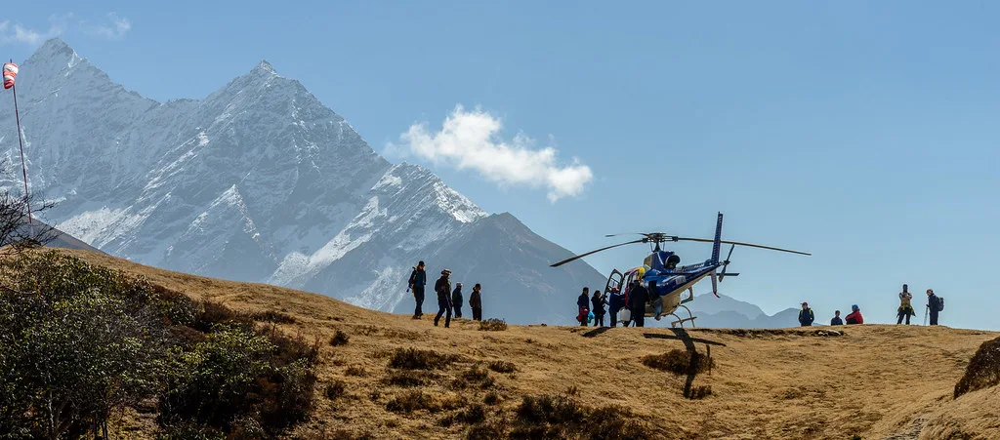

네팔 대홍수 사망 1300명 육박…한국인 실종 9명 수색 난항, 7일 국가 애도일
네팔 정부가 7일을 대홍수 희생자를 기리는 국가 애도일로 지정했다. 지난달 26일 몬순 폭우로 시작된 대규모 홍수와 산사태로 네팔 재난관리 당국이 집계한 사망자는 최소 1,287명, 실종자는 5,600여 명에 이른다. 희생자 가운데 상당수가 외국인 노동자와 관광객으로 파악되면서, 이번 재해는 남아시아 지역에서 최근 몇 년 사이 발생한 자연재해 가운데 인명 피해 규모가 가장 큰 축에 든다.
한국인 피해는 트리슐리강 상류의 어퍼트리슐리(UT)-1 수력발전소 건설 현장에서 나왔다. 이곳에 파견돼 있던 기술자 등 한국인 직원 9명이 홍수 당일 연락이 끊긴 뒤 열흘 넘게 생사가 확인되지 않고 있다. 이 사업은 한국남동발전이 참여하고 두산에너빌리티가 시공을 맡은 것으로 알려졌으며, 두 회사는 별도의 현장 수색 인력을 투입해 구조 작업을 지원하고 있다. 발전소는 험준한 협곡을 따라 조성돼 있어, 불어난 강물과 토사가 순식간에 현장을 덮친 것으로 전해졌다.
정부는 지난 1일 자정 이규호 외교부 개발협력국장을 대장으로 하는 해외긴급구호대(KDRT) 44명을 군 수송기 편으로 네팔에 급파했다. 구호대는 외교부와 한국국제협력단(KOICA), 소방청 등 관계기관 합동으로 꾸려졌으며, 현지에서 육상 수색조와 드론팀, 수색견을 나눠 발전소 인근 람체 지역과 물이 빠진 터널 구간을 중심으로 실종자를 찾고 있다. 전문 산악인도 수색에 참여했다.
수색은 쉽지 않은 상황이다. 구호대와 현지 업체는 수색 범위를 계속 넓히고 있으나 한국인 실종자를 아직 발견하지 못했다. 다만 홍수 발생 열흘 만에 같은 발전소 인근에서 중국인 노동자가 생존한 채 구조된 사례가 나오면서, 추가 생존자에 대한 기대도 완전히 접지 않고 있다. 지반이 약해진 산지에서 크고 작은 2차 산사태가 이어지고 있어 수색대의 안전 확보도 과제로 남아 있다.

네팔과 인접 지역은 매년 6∼9월 몬순 기간에 집중호우와 산사태가 반복되지만, 올해는 짧은 시간에 쏟아진 비의 양이 예년을 크게 웃돌면서 피해가 커졌다. 최근에는 기온 상승으로 히말라야 빙하가 빠르게 녹으면서 상류에 고인 빙하호가 갑자기 터지는 이른바 '빙하호 홍수' 위험도 커지고 있다는 지적이 나온다. 험준한 지형을 이용한 수력발전 개발이 활발한 만큼, 건설 현장의 재해 대비와 근로자 대피 체계, 조기 경보 시스템을 강화해야 한다는 목소리도 커지고 있다.
정부 합동 신속대응팀은 네팔군과 함께 발전소 터널 등지에서 추가 수색을 벌였으나 특이 사항을 확인하지 못했다. 통신과 도로가 끊긴 산간 지역이 많아 헬기 이동이 필요하지만, 잦은 비와 낮게 깔린 구름 탓에 항공 수색이 자주 중단되는 것으로 알려졌다. 이 때문에 육로 수색조가 무너진 길을 우회해 걸어서 접근하는 방식으로 작업이 진행되고 있다.
이재명 대통령은 프랑스 국빈방문 출국에 앞서 실종 한국인 관련 상황을 계속 보고받으며 필요한 조치를 챙기겠다고 밝혔다. 외교부는 현지 대응팀을 통해 네팔 정부·군과 공조를 이어가고 있으며, 실종자 가족 지원과 귀국 대책도 병행하고 있다. 우기가 끝나 접근성이 나아지기 전까지 수색이 장기화할 수 있다는 전망이 나온다.